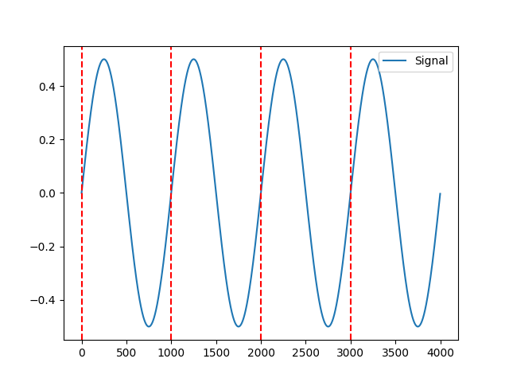

Events
Contents
Events#
Main#
events_create()#
- events_create(event_onsets, event_durations=None, event_labels=None, event_conditions=None)[source]#
Create events dictionnary from list of onsets
- Parameters
event_onsets (array or list) – A list of events onset.
event_durations (array or list) – A list of durations. If none is passed, will take the duration between each onset (i.e., will assume that events are consecutive).
event_labels (list) – A list containing unique event identifiers. If None, will use the event index number.
event_conditions (list) – An optional list containing, for each event, for example the trial category, group or experimental conditions.
- Returns
dict – Dict containing 3 or 4 arrays,
'onset'for event onsets,'duration'for event durations,'label'for the event identifiers and the optional'conditions'passed toevent_conditions.
See also
events_plot,events_to_mne,events_findExample
In [1]: import neurokit2 as nk In [2]: events = nk.events_create(event_onsets = [500, 1500, 2500, 5000]) In [3]: events Out[3]: {'onset': [500, 1500, 2500, 5000], 'duration': array([ 500, 1000, 1000, 2500]), 'label': array(['1', '2', '3', '4'], dtype='<U21')} In [4]: events = nk.events_create(event_onsets = [500, 1500, 2500, 5000], ...: event_labels=["S1", "S2", "S3", "S4"], ...: event_conditions=["A", "A", "B", "B"]) ...: In [5]: events Out[5]: {'onset': [500, 1500, 2500, 5000], 'duration': array([ 500, 1000, 1000, 2500]), 'label': ['S1', 'S2', 'S3', 'S4'], 'condition': ['A', 'A', 'B', 'B']}
events_find()#
- events_find(event_channel, threshold='auto', threshold_keep='above', start_at=0, end_at=None, duration_min=1, duration_max=None, inter_min=0, discard_first=0, discard_last=0, event_labels=None, event_conditions=None)[source]#
Find Events
Find and select events in a continuous signal (e.g., from a photosensor).
- Parameters
event_channel (array or list) – The channel containing the events.
threshold (str or float) – The threshold value by which to select the events. If “auto”, takes the value between the max and the min.
threshold_keep (str) – “above” or “below”, define the events as above or under the threshold. For photosensors, a white screen corresponds usually to higher values. Therefore, if your events are signaled by a black colour, events values are the lower ones, and you should set the cut to “below”.
start_at (int) – Keep events which onset is after a particular time point.
end_at (int) – Keep events which onset is before a particular time point.
duration_min (int) – The minimum duration of an event to be considered as such (in time points).
duration_max (int) – The maximum duration of an event to be considered as such (in time points).
inter_min (int) – The minimum duration after an event for the subsequent event to be considered as such (in time points). Useful when spurious consecutive events are created due to very high sampling rate.
discard_first (int) – Discard first or last n events. Useful if the experiment starts with some spurious events. If discard_first=0, no first event is removed.
discard_last (int) – Discard first or last n events. Useful if the experiment ends with some spurious events. If discard_last=0, no last event is removed.
event_labels (list) – A list containing unique event identifiers. If None, will use the event index number.
event_conditions (list) – An optional list containing, for each event, for example the trial category, group or experimental conditions.
- Returns
dict – Dict containing 3 or 4 arrays, ‘onset’ for event onsets, ‘duration’ for event durations, ‘label’ for the event identifiers and the optional ‘conditions’ passed to event_conditions.
See also
events_plot,events_to_mne,events_createExample
In [1]: import neurokit2 as nk In [2]: signal = nk.signal_simulate(duration=4) In [3]: events = nk.events_find(signal) In [4]: events Out[4]: {'onset': array([ 1, 1001, 2001, 3001]), 'duration': array([500, 500, 500, 500]), 'label': array(['1', '2', '3', '4'], dtype='<U21')} In [5]: nk.events_plot(events, signal) Out[5]: <Figure size 640x480 with 1 Axes>
{kind=link}
events_to_mne()#
- events_to_mne(events, event_conditions=None)[source]#
Create MNE-compatible events
Create MNE compatible events for integration with M/ EEG.
- Parameters
events (list or ndarray or dict) – Events onset location. Can also be a dict obtained through ‘events_find()’.
event_conditions (list) – An optional list containing, for each event, for example the trial category, group or experimental conditions. Defaults to None.
- Returns
tuple – MNE-formatted events and the event id, that can be added via ‘raw.add_events(events), and a dictionary with event’s names.
See also
Examples
In [1]: import neurokit2 as nk In [2]: signal = nk.signal_simulate(duration=4) In [3]: events = nk.events_find(signal) In [4]: events, event_id = nk.events_to_mne(events) In [5]: events Out[5]: array([[ 1, 0, 0], [1001, 0, 0], [2001, 0, 0], [3001, 0, 0]]) In [6]: event_id Out[6]: {'event': 0} # Conditions In [7]: events = nk.events_find(signal, event_conditions=["A", "B", "A", "B"]) In [8]: events, event_id = nk.events_to_mne(events) In [9]: event_id Out[9]: {'B': 0, 'A': 1}